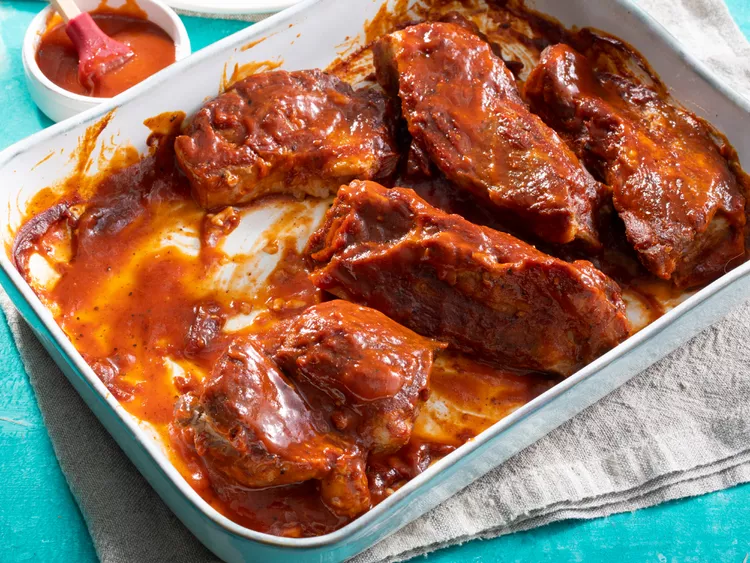

The Most Delicious Ribs
This BBQ ribs recipe may be different than others you've tried, but for super tender ribs, give it a try! Lean, country-style pork ribs are boiled in seasoned water until tender, then finished up in the oven under a blanket of your favorite barbecue sauce as they bake to perfection. That's it! Back to simplicity, back to country life.
Ingredients
- 2 ½ pounds country-style ribs
- 2 tablespoons kosher salt
- 1 tablespoon garlic powder
- 1 teaspoon ground black pepper
- 1 cup barbecue sauce
Steps
- Gather all ingredients.
- Place ribs in a large pot and cover with water. Stir in kosher salt, garlic powder, and pepper, and bring water to a boil over medium heat. Continue to boil until ribs are tender, 40 to 45 minutes.
- While the ribs are boiling, preheat the oven to 325 degrees F (165 degrees C).(I don't agree with boiling ribs lmao)
- Remove ribs from the pot, and place them in a 9x13-inch baking dish. Pour barbeque sauce over ribs. Cover the baking dish with aluminum foil.
- Bake in the preheated oven until the internal temperature of the pork has reached 160 degrees F (70 degrees C), 1 to 1 1/2 hours.
- Serve hot and enjoy!